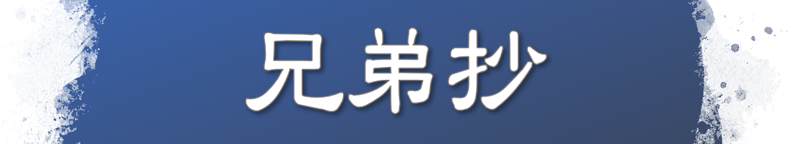

형제초

안녕하십니까?
이번달 어서는 <형제초>입니다.
<형제초>는 대성인이 무사시 지방 이케가미에 사는 문하 이케가미 무네나카, 무네나가 형제와
그 부인들에게 보내신 편지입니다. 이케가미 형제가 언제 입신했는지는 확실하지 않지만
초창기부터 대성인 문하였다고 전해집니다.
이케가미 가문은 유력한 대목장으로 가마쿠라 막부를 섬기고 있었습니다. 그러나 아버지 야스미쓰는
형제가 법화경을 신앙하는 것을 반대하고 형과 의절했습니다. 이 어서는 그 사건을 보고받은 뒤
형제에게 보낸 격려편지입니다. 1275년에 저술하셨다고 여겼지만 현재는 1276년이 유력합니다.
당시 의절이라고 함은 가독상속권을 잃는 일이고 경제적 기반과 사회적 신분을 박탈당하는
혹독한 압박이었습니다. 또 형이 의절당한다는 것은 동생이 아버지를 따라 신앙을 버리면
가독상속권을 물려받을 수 있다는 의미입니다. 그러므로 대성인은 특히 동생 무네나가의 신심을 염려해
여러 각도에서 격려하셨습니다.
이 어서에서 대성인은 법화경을 믿는 사람이 두려워해야 하는 것은 신앙을 방해하는 존재이고,
난을 만나는 것도 ‘제육천의 마왕’이 들러붙은 악지식이 신심을 방해하기 때문이라고 밝히셨습니다.
또 신심에 힘쓰는 사람이 난을 만나는 다른 관점으로서 그 사람이 과거세에 저지른 방법의 과보를
현세에 가볍게 받아 소멸시키기 위함이라는 ‘전중경수’의 법문을 설하고
난은 제천선신이 형제의 신심을 시험하려는 시련이라고 가르치셨습니다.
그리고 ‘삼장사마’가 다투어 일어나는 것은 이케가미 형제가 정법을 실천해
깊이 있는 신심을 착실히 하고 있다는 증거이므로 형제와 부인들이 단결해 신심 근본으로
난을 이겨내라고 격려하셨습니다.
이 어서를 보내신 뒤 형이 두번째 의절을 당하지만 형제는 대성인의 지도 대로 실천해
마지막에는 아버지도 입신했습니다.
그럼 [본문]을 함께 읽겠습니다.
[ 본 문 ] (어서전집 1088쪽 16행~18행)
설사 어떠한 괴로운 일이 있을지라도 꿈으로 돌리고 다만 법화경의 일만을 사색하시라. 그 중에도 니치렌의 법문은 옛날에는 믿기 어려웠으나 이제는 전전에 일러두었던 일이 이미 부합하므로 까닭 없이 비방하던 사람들도 후회하는 마음이 있으리라. 설령 차후에 믿는 남녀가 있을지라도 그대들과 바꾸어 생각할 수는 없느니라. 이어서 [통해]를 읽어드리겠습니다.[ 통 해 ]
설사 어떠한 괴로운 일이 있을지라도 꿈이라 생각하고 오직 법화경의 일에만 전념하시라. 그 중에서도 니치렌의 법문을 예전에는 믿기 어려웠지만 지금은 오래 전에 말해놓은 일이 적중했기에 이유도 없이 비방한 사람들도 후회하는 마음이 일어날 것이다. 설령 앞으로 신앙하는 남녀가 있을지라도 당신들과 바꾸어 생각할 수는 없다.[ 어 구 해 설 ]
전전에 일러두었던 일은, 니치렌 대성인이 1260년에 호조 도키요리에게 제출한 <입정안국론>에서 자계반역난과 타국침핍난이 일어날 것이라고 예언한 일을 말합니다. 이 예언대로 1272년에 호조 일문의 내란이 일어나고 1274년에는 몽고군이 이키, 쓰시마를 지나 규슈 북부로 쳐들어오는 몽고내습이 일어나 자계반역난과 타국침핍난이 각각 현실이 되었습니다.[ 포 인 트 ]
배독어서 바로 앞부분에서 대성인은 이케가미 형제와 부인들이 고난을 이겨내려면 ‘마음’을 스승으로 삼지 말고 ‘마음의 스승’을 구도해야 한다고 강조하셨습니다. ‘마음의 스승’은 확고부동한 ‘법’을 수지하는 것입니다. 우리로 말하면 어본존 근본, 어서 근본의 자세가 ‘마음의 스승’을 구도하는 것입니다. 그러려면 ‘사제불이’의 삶을 관철하는 일이 중요합니다.그리고 대성인은 “설사 어떠한 괴로운 일이 있을지라도 꿈으로 돌리고 다만 법화경의 일만을 사색하시라” 하고 말씀하셨습니다.
눈앞의 어떠한 사실과 현상도 영원이라는 장대한 규모에서 보면 모두 일시적인 꿈에 지나지 않습니다. 삼장사마에 분동해 영원한 ‘법’에서 멀어지는 것만큼 어리석은 일은 없습니다. 오로지 광선유포를 주시하고 스승을 구도해 영원히 승리하는 신앙을 관철해야 합니다. 학회에는 “다만 법화경의 일만을”이라는 성훈을 신독해 어떠한 비난과 중상모략에도 지지 않고 스승과 함께 창제 근본으로 승리의 함성을 울리는 인생을 걷는 동지가 많습니다. 이케다 선생님은 이런 분들이야말로 ‘광선유포의 보배’ ‘인류의 보배’라고 칭찬하셨습니다.
이 어서를 집필하실 당시 대성인이 <입정안국론>에서 예언한 ‘자계반역난’과 ‘타국침핍난’이 적중해 이미 현실이 되었습니다. 이 예언이 적중한 현증을 보고 그때까지 대성인을 비방한 사람들 중에도 후회하는 사람이 있었습니다.
이러한 상황에서 대성인은 순수하게 신심을 관철해 사제의 길을 걸어온 이케가미 형제와 부인들을 최대로 칭찬하고 깊은 신뢰를 보내셨습니다.
이케다 선생님은 이렇게 말씀하셨습니다.
“어떤 폭풍우가 불어도 조금도 미동 없이 배신자들을 유연하게 내려다보고 오로지 광포의 대도를 관철한 문하들이야말로 진정한 제자라고 대성인은 최대로 찬탄하셨습니다. ‘사제’야말로 인생의 더할 나위 없는 가치입니다.”
우리는 어떠한 때에도 한결같은 신심으로 꿋꿋이 살아 진정한 제자의 길을 관철합시다.
감사합니다.